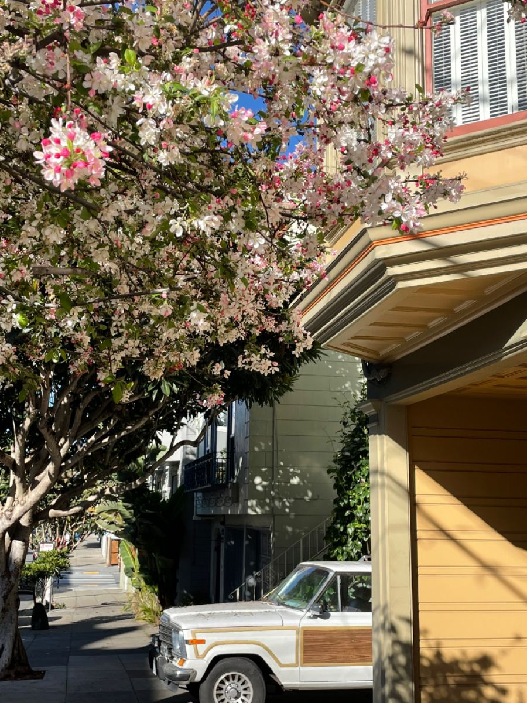

Why I Chose California Poppies
The California poppy is the official flower of California. I included it because my website connects to San Francisco and California nature.
The flower adds warmth, brightness, and local identity to the project.

🌼